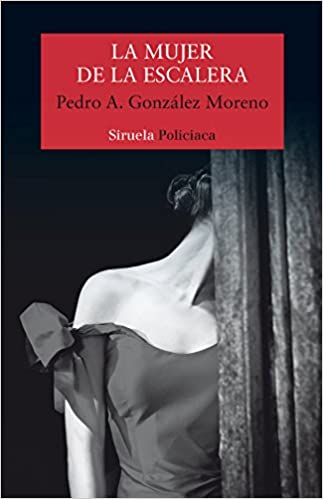

Premio Cafe Gijon
critica
Biografia
Pedro A. González Moreno (Calzada de Calatrava, 1960), licenciado en Filología Hispánica y profesor de lengua y literatura, ha publicado seis libros de poesía, entre los que destacan Calendario de sombras (premio Tiflos, 2005), Anaqueles sin dueño (premio Alfonso el Magnánimo, 2010) y El ruido de la savia (premio José Hierro, 2013). En prosa es autor de Los puentes rotos (IX Premio Río Manzanares de novela, 2007), el libro de viajes Más allá de la llanura (2009 y 2013), la novela juvenil La estatua de lava (2014) y La musa a la deriva (premio Fray Luis de León de ensayo, 2016).